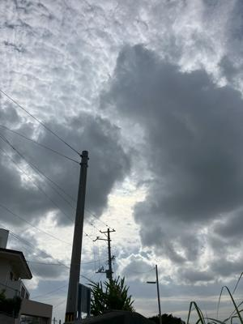

うるがいの話 ある日
最新: 傘がない！【うるがいの話 ある日】とは 一日だけのプログです
『うるがいの話』の最新一日だけのプログで、通信料が少なく経済的だ。カニの画像をクリックすると全ての日付が載る『うるがいの話』サイトを表示します
|
|
【うるがいの話】 うるがい(ｳﾙｶﾞｲ urugai)とは、『もずくがに』の名前でとても大きくなります。 |
|---|---|
|
|
【カミマヤーの話】 猫のことを方言でマヤーといいます。カミマヤー（kamimayaa）とは、神の猫のことです。 |
|
【たながぁの音楽】 たながぁ（ﾀﾅｶﾞｰ tanagaa）とは手長えびのことで、何種類かあり大きいのは車 エビぐらいになります。 |

|
【ぶながぁの話】 ぶながぁ(ﾌﾞﾅｶﾞｰ bunagaa)とは、赤い髪の毛、赤い身体、そして身長は１ｍ２０ｃｍ ぐらい、川の蟹を食べているの目撃された。場所は沖縄県国頭郡大宜味村のと ある村僕の隣近所に住んでいる爺さんから、聞いた話です。 |
|
|
【ギーマの話】 ギーマ(giima)とは、山原の里山に咲くスズランに似た、 花を付けます。実は食べられます、 気が付くと口の周りが紫になっています。 |
2024年05月12日 (日）傘がない！
15:15

ヨメがお義母さんの『母の日』の花を買うために、サンエーに行く。小雨が
ぱらついていたので、ビニール傘を持ってお店に入る。ヨメが花を選び、私
がビニール袋に入れられた花を持つ役割に。ついでに、他の買い物をヨメは
する。私は、車に戻る・・・、ん？、そういえば傘を持っていたはずだがと
お店に戻る、どこに忘れたのかと考えながら探し始める、するとヨメが何を
していると言うので、傘を忘れたと言うと、『腕に下げているヨ！』と言わ
れる。お！、花を一緒に左腕に下げていたのだった（右手は、別の買い物袋
を持っている）。大丈夫か？とヨメに言われた。
午後２時に、老人ホームへ行く。花を部屋に置くが、『何のために生きてい
るか、どうしてここにいるの？、マンションに戻りたい』とヨメにわめく。
１０分間ひたすら、ヨメを攻めるので、ヨメに職員と状況の確認をしたらと
薦め、部屋から出せた。なんとお義母さんと雑談する。しばらくすると雑談
に答え、落ち着いてくれた。２５分で引き上げる、ヨメだけの面談は無理と
感じた。なお、前の施設（隣ビル）は、コロナ感染が出たので面会禁止の貼
り紙が、入口に貼っていた。昨日の新聞では、
『沖縄のコロナ、４週連続増 定点当たり９・７７人 都道府県別で最多』
県によると、県内定点医療機関での新規入院患者は３８人。そのうち８０歳
以上が２５人で、６６％を占めた。
よく、面会できたもんだ。私達以外にも、複数の面談者が訪れていた。
１５時０６分 ビットコインの総資産 ￥２７、５７７（↑４７）